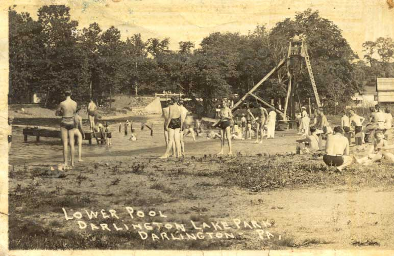

Darlington
Darlington Lake
Where: Darlington PA
When: Various
Status:
In use
| Darlington Lake was a small park located
in Dalington Pennsylvania not far across the border from my hometown
of East Palestine Ohio. My Grandparents, Father, and aunts lived in
one of the lake cottages during a great part of their childhood years.
The park started life as a small lake resort area similar to Chippewa
Lake Park, or even Cedar Point. The lake never ended up becoming a full
fledged amusement park like some of the others, but still provided great
times for both visitors and relatives. After the recent and unfortunate loss of my Grandfather, my Aunt came across some postcards from the lake. She was gracious enough to provide the postcards as well as a brief account of her memories of the days she spent living at the Lake. I have provided scans of both of those cards here as well as a poorly made map that I recreated from my Aunt's hand drawn map and some highlights of her memories of the Lake. There is also a sattelite picture of the park taken from terraserver.com. Darlington lake is about one hour 'westish' of Pittsburgh. My father spent much of his life there as did his siters and parents. To this day, two of the sisters, my aunts, are still living there. The lake is still used for swimming, but there is no longer camping there, a dike has been built separating the lake and the cottages, and most of the old cottages are now used as homes. |
|  |
Accounts of Time Spent at Darlington
My Aunt was kind enough
to put together a small account of some of the memories she has of
the lake. One of the post cards that she found was a postcard sent from their Aunt Lucille sent to my Great Grandparents (her parents). The other shows pictures of boys and girls swimming in the "lower pool". There is a wooden slide and a diving platform in the picture, as well as the bridge on the main road with a family watching the swimming going on. My aunt notes that the water was so deep around the diving platform that no one ever touched bottom when diving. She also notes that the slide was wooden, and very hard on bathing suits. Ouch! Downstream from the lower pool was a dam. People fished by the dam where the water was also very deep. The dam was a popular place for tanning. My aunt also mentions that brave souls would sit under the water coming through the dam and cool off. The area under the dam was referred to as the hole. She mentions tha she almost drown there once and had to be pulled from the water. She isn't alone. She also mentions that she pulled others from the water as she grew up. People entered the recreation area via the upper road. Entrants came to a 6' tall fence covered in pink roses and a tollbooth. The entry fee was .25 cents. People who lived there entered free because the belonged to the Darlington lake Association. My Aunt spent her teen years like many others at the lake at the pool or dancing to the jukebox. Living in the area allowed my aunt to meet people from all of the place including a family from New York who stayed in a cottage rented out by her aunt. They taught her to sing "Sidewalks of New York". There were also boyscout groups that stayed at the lake. My Aunt recounts a time when the boyscouts were rained out. Most left, taking the food with them, and the remaining scouts had to live on green tomatoes intil their parents came to get them. According to my aunts description, the lake housed a large picnic house with a stage as well as a dance hall with refreshment stand. The Resort area at the lake slowly faded away to become mostly just a swimming area with the cottages being used as homes. I plan on getting some pictures of the lake are as it stands now. Below are a map and a sattelite photo of the lake. They don't really correspond well at all. One is actually facing the other direction than the other. |